Plebbium
The browser that gets more done.
Chromium, built from source, with Pleb's features built in rather than bolted on: one bar for everything, workspaces with their own logins, a blocker, tabs that tidy themselves, and AI that runs on your own computer. It is the browser I use every day, and it keeps itself up to date.
Free · Windows 10 and 11, 64-bit · about 170 MB · installs for you only, no admin rights needed. It is not code-signed yet, so Windows asks once: choose More info, then Run anyway.
13 things, one browser.
Each board is the design the feature was built from. Swipe or drag through them, use the arrow keys, or jump straight to one.
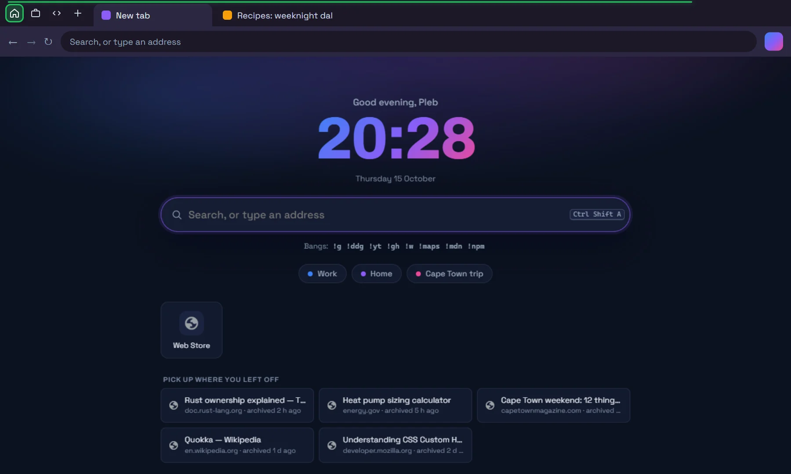
A calm place to start
A clock, one search box with !bangs, your workspaces, and the pages you can pick up where you left off.
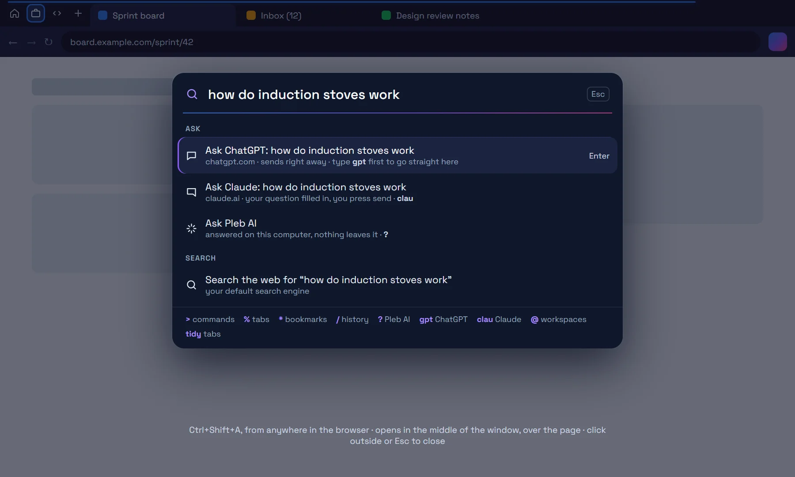
One bar for everything
Commands, open tabs, bookmarks, history, the Archive, sums and conversions. Type a question and Enter asks ChatGPT, or Claude, or Pleb AI on your own computer.
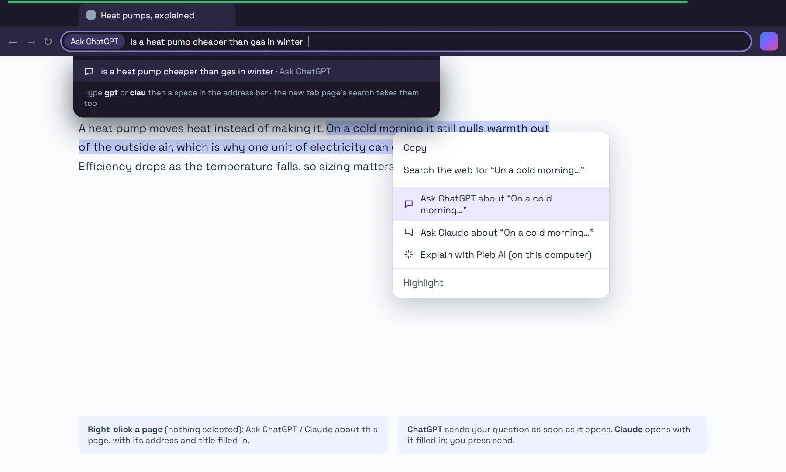
Ask ChatGPT or Claude from anywhere
Type gpt or clau and a space in the address bar. Right-click a selection, or the page itself, to ask about it with its source attached.
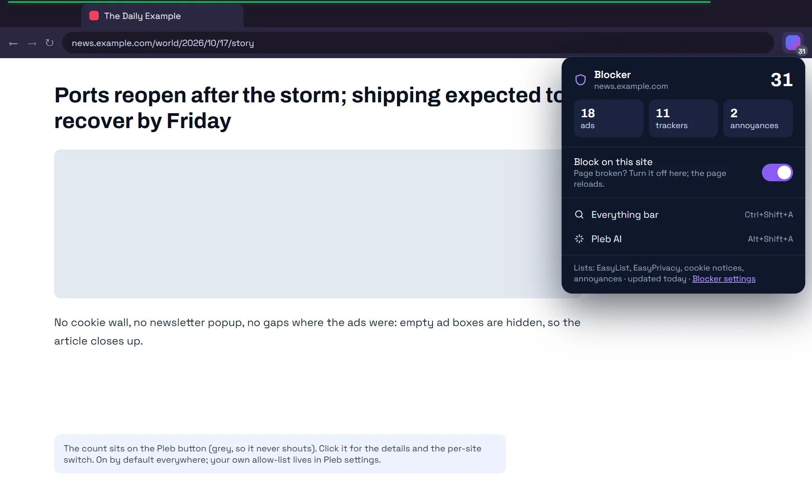
Ads and trackers, gone
Blocked by Chromium itself, from EasyList, EasyPrivacy and the cookie-notice and annoyance lists. The count sits on the Pleb button; one switch turns blocking off for a site.
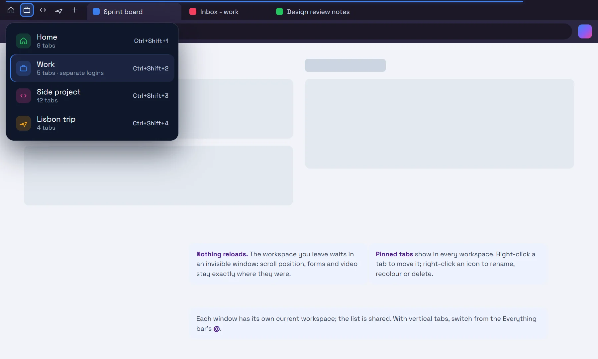
Workspaces
Named sets of tabs in one window: Work, Home, a project. Switching reloads nothing; the tabs you leave wait exactly as they were.
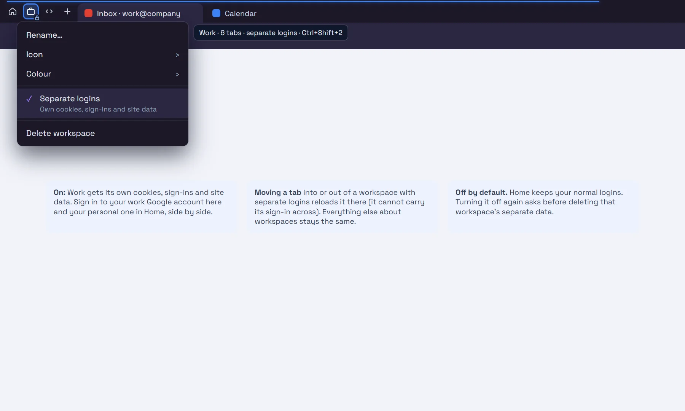
Separate logins
Give a workspace its own cookies, sign-ins and site data: your work Google account in Work, your personal one in Home, side by side.
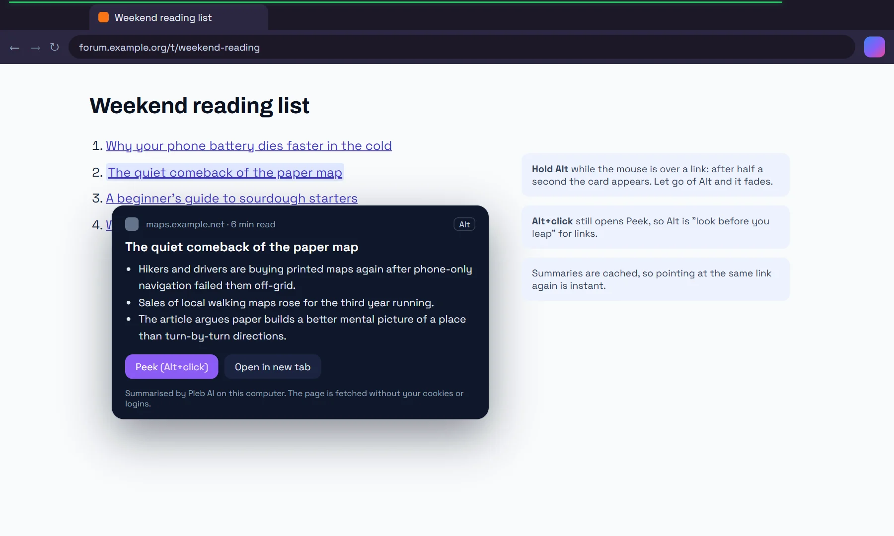
Know before you click
Hold Alt over a link for three lines on what is behind it, summarised on your computer. The page is fetched without your cookies.
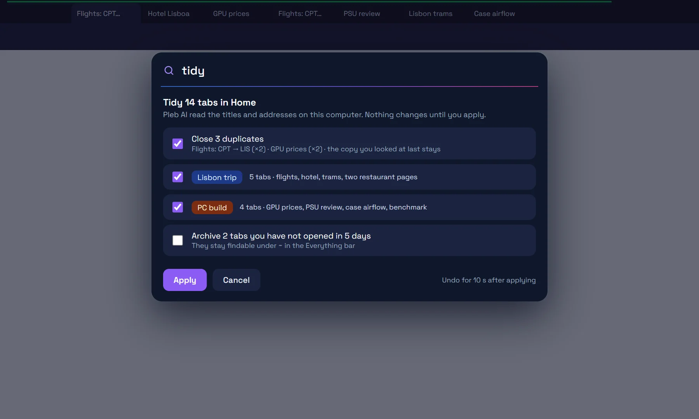
Tidy in one word
Duplicates closed, topics grouped, tabs you left behind archived. Proposed first, applied when you say so, with Undo.
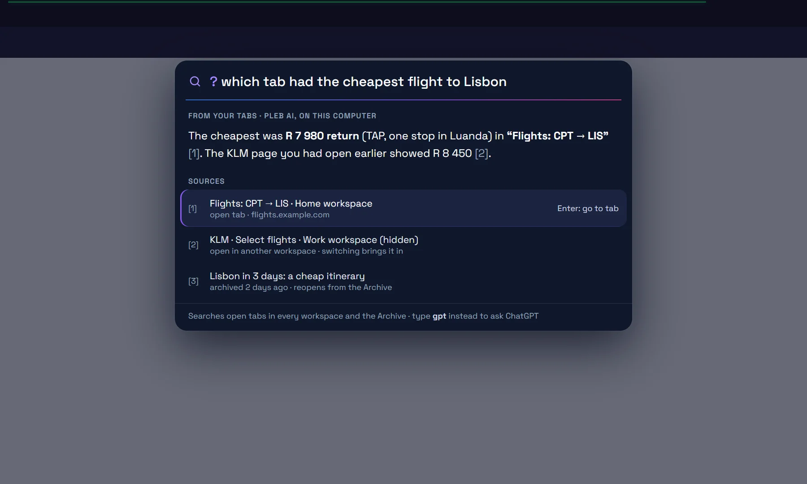
Ask your tabs
Ask a question of every open tab, what you have read and the Archive. The answer says which tab it came from.
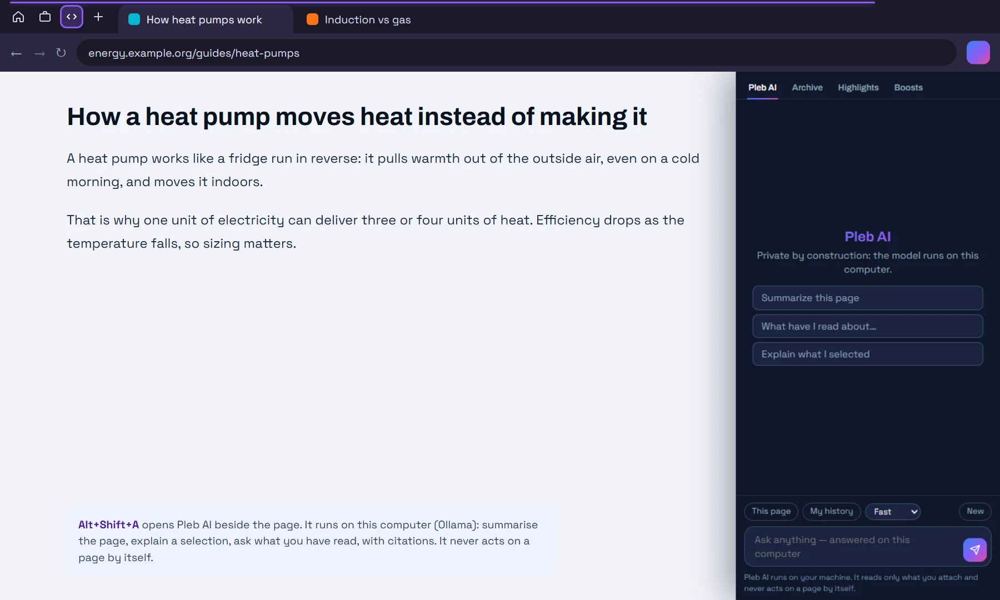
Pleb AI, on your computer
Summarise a page, explain a selection, ask your reading history. The model runs on your own machine, and it never acts on a page by itself.
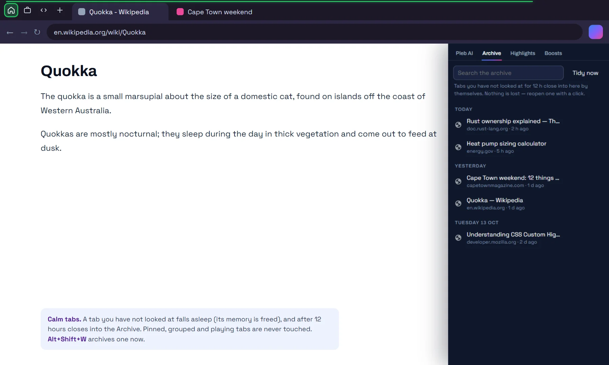
Tabs that tidy themselves
A tab you have not looked at falls asleep, then closes into the Archive after 12 hours. Nothing is lost: search it, reopen it with a click.
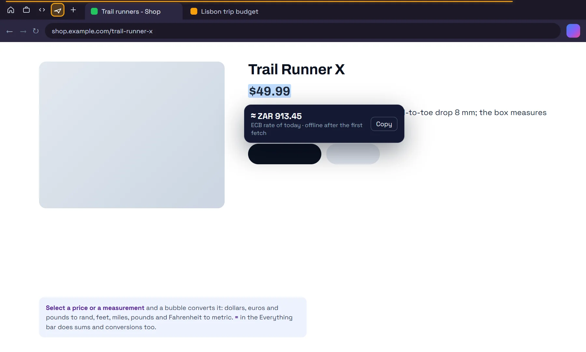
Prices and units, converted
Select $49.99 or 5 ft 11 in and a bubble converts it to rand or metric, with Copy. The Everything bar does sums too.
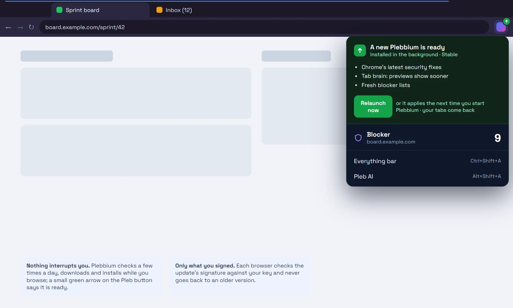
Always current
Chrome's security fixes and new Pleb features arrive by themselves, installed in the background and signed with Plebbium's key. Nothing older is ever installed.
Three minutes, start to default.
The same installer for every computer, mine included. It installs into your own user folder and is uninstalled from Windows Settings like anything else.
-
Download and run Plebbium-Setup.exe.
Windows SmartScreen asks once, because the installer is not code-signed yet: More info, then Run anyway. Plebbium installs and starts.
Plebbium-Setup.exe -
Bring your things, make it the default.
Chromium's own import brings bookmarks, passwords and history over from Chrome, Edge or Firefox. Then press Ctrl+Shift+A, type default and press Enter: Windows opens on Plebbium's page, where you choose Set default.
-
Optional: Pleb AI.
For Pleb AI, link previews, Tidy and asking your tabs, unzip Pleb-AI.zip and run Set up Pleb AI.cmd. It needs Python, and offers to install Ollama and the models it uses (about 5 GB). Everything stays on your computer.
Pleb-AI.zip -
That is it: it updates itself.
A few times a day Plebbium checks for a new version, installs it in the background and uses it the next time you start it. In Plebbium settings, under Updates, you can choose Stable or Beta, or check right away.
A fork, not a skin.
Plebbium is Chromium compiled from source. Ten patches add what an extension cannot reach — the centred Everything bar, workspaces with their own logins, the signed updater — and Pleb's features ship inside it as a built-in extension that loads with the browser. Every feature is tested in the real, built browser.
Plebbium only installs updates signed with its own key, and never an older version than the one you run. The downloads live on GitHub, reached through updates.plebbian.com.